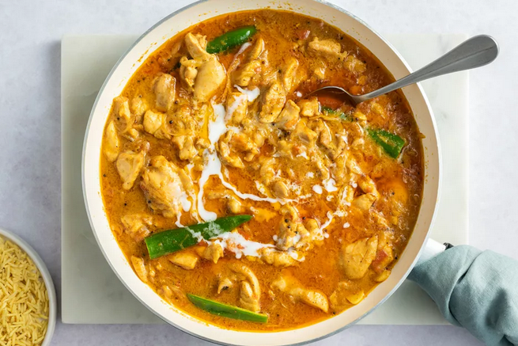

Chicken Curry

Description
This basic chicken curry is also one of the tastiest, but feel free to use this recipe as a foundation and add ingredients you may prefer (like more spice, or curry leaves, which they use in South India). It calls for whichever type of chicken you favor, white or dark meat, but be sure to remove the skin.
Ingredients
- Chicken
- Tomato
- Sour cream
- Lemon
- Spice mix- cumin, coriander, turmeric, and chilly or cayenne
- Garam masala
- Cilantro
Steps
- Add all curry paste ingredients to a food processor and blend until smooth. Set aside
- In a large skillet or pan over medium heat, add the oil and ground curry paste. Cook for about 2 minutes until fragrant. If necessary add a few tablespoons of water to prevent the spices from burning.
- Next, add the chopped tomatoes and tomato paste. Cook another 2 minute
- Add the chicken pieces and saute for 2 minutes more or until the chicken is well coated in all the masala. Add 1 cup water or chicken broth and combine well. Bring to a boil on medium-high heat.
- Cover the pot and cook on medium heat for about 8 to 10 minutes or until the chicken is cooked.
- Finally, add sour cream (or yogurt) and lemon juice. Simmer another 2 minutes. Taste and adjust seasoning and consistency.
- Sprinkle with more chopped cilantro before you serve.